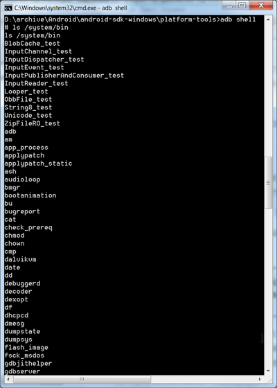

/* Моя кошка замечательно разбирается в программировании. Стоит мне объяснить проблему ей - и все становится ясно. */
John Robbins, Debugging Applications, Microsoft Press, 2000

/* Моя кошка замечательно разбирается в программировании. Стоит мне объяснить проблему ей - и все становится ясно. */
John Robbins, Debugging Applications, Microsoft Press, 2000
Клиент-серверное приложение, которое предоставляет доступ к работающему эмулятору или устройству. С его помощью можно копировать файлы, устанавливать скомпилированные программные пакеты и запускать консольные команды. Используя консоль, вы можете изменять настройки журнала и взаимодействовать с базами данных SQLite, которые хранятся на устройстве. В старых версиях SDK программа находилась в папке tools, теперь находится в папке platform-tools.
Состоит из трех компонентов: фоновой службы (демона), работающей в эмуляторе, сервиса, запущенного на компьютере разработчика, и клиентской программы (наподобие DDMS), которая связывается со службой через Сервис.
Что бы увидеть весь список параметров и команд, которые можно запустить при помощи adb, введите в командной строке следующее:
adb help
Если у вас есть файл приложения APK и вы хотите его установить на эмуляторе, то используйте команду:
adb.exe install d:\program.apk
d:\program.apk - это путь к файлу, который хотите установить в эмулятор. После этого установленное приложение появится в эмуляторе. Если приложение слишком большое (несколько мегабайт), то придётся немного подождать, пока установится. Во время установки в консоли курсор будет мигать, а потом появится надпись Success, что означает успешную установку программы.

Также можно удалить ненужную программу по имени его пакета:
adb uninstall <package name>
Чтобы получить список запущенных эмуляторов и их серийные номера, используйте команду:
adb devices
Вы увидите приблизительно такую картину:

Зная имя устройства, вы можете запустить на нужном устройстве требуемую команду:
adb devices List of devices attached 0070015947d30e4b device 015d2856b8300a10 device $ adb –s 015d2856b8300a10 logcat
Чтобы перезапустить сервер:
adb stop-server adb start-server

Сделать бэкап и восстановить из бэкапа можно так:
adb backup adb restore <archive name>
Для копирования файлов с устойства на компьютер и обратно используются команды pull и push.
adb push <local source file path> <device destination file path> adb pull <device source file path> <local destination file path>
Чтобы запустить оболочку (shell) на подключенном устройстве, выполните следующую команду:
adb shell
Символ # обозначает приглашение оболочки (shell prompt).
Вы можете просмотреть список команд, доступных при работе в оболочке, введя следующую информацию по приглашению оболочки:
# ls /system/bin

Чтобы просмотреть список каталогов и файлов, находящихся на корневом уровне (root-level), введите в командной строке оболочки следующую команду:
ls -l
Для просмотра списка баз данных используйте команду:
ls /data/data
В этом каталоге содержится список пакетов, установленных на устройстве. Для примера исследуем пакет com.android.providers.contacts:
ls /data/data/com.android.providers.contacts/databases
Эта команда отобразит файл contacts.db и др., представляющие собой базу данных SQLite.
adb shell logcat --help logcat -t 5


Monkey ([android-sdk-path]**/platform-tools) - утилита для генерации случайных жестов на эмуляторе или устройстве, что напоминает движения глупой мартышки. Запустите в командной строке команду:
adb shell monkey <options>
Например, если имя пакета вашего приложения com.myapp и вы хотите сгенерировать 1000 жестов с интервалом 500 миллисекунд, то используйте команду:
adb shell monkey -p com.myapp --throttle 500 -v 1000
Список доступных команд (также смотрите документацию):

Для просмотра всех файлов базы данных *.db используйте команду:
ls -R /data/data/*/databases
Вы увидите, что в Android имеются следующие базы данных (зависимости от версии Android набор может варьироваться):
alarms.db
contacts.db
downloads.db
internal.db
settings.db
mmssms.db
telephony.db
Можно активировать команду sqlitе3 для одной из перечисленных баз данных, введя следующую информацию:
#sqlite3 /data/data/com.android.providers.contacts/databases/contacts.db
Для завершения работы с sqlite3 напишите:
sqlite> .exit
Обратите внимание: приглашение для adb - это #, а приглашение для sqlitе3 - это sqlite>.
Вы можете записать видео с экрана вашего устройства (на эмуляторе не работает):
adb shell screenrecord /sdcard/my_app.mp4
Затем можно сбросить на компьютер.
adb pull /sdcard/my_app.mp4
где /sdcard/my_app.mp4 – путь к файлу с видео (sdcard) и его имя (my_app.mp4).
Максимальное время записи равно трём минутам. Можно прервать запись (Ctrl+C).
Также вы можете управлять качеством записи, разрешением и другими параметрами с помощью следующих команд:
--size <ШИРИНАxВЫСОТА> Задает разрешение, например: 1280x720. По умолчанию этот параметр установлен в соответствии с разрешением главного экрана устройства (если поддерживается), или 1280x720 – если нет.
--bit-rate <СкоростьПотока> Задает скорость потока видео (мегабиты в секунду). По умолчанию – 4 Мб/сек. Например, для записи со скоростью 6 Мб/сек, вам нужно будет ввести следующую команду:
screenrecord --bit-rate 6000000 /sdcard/demo.mp4
--time-limit <Время> Задает максимальную длительность видео в секундах. По умолчанию установлено максимальное значение – 180 сек (3 минуты).
--rotate Поворот видео на 90 градусов. Экспериментальная опция.
--verbose Отображать информацию о процессе записи в окне командной строки.
В Android Studio вы можете начать запись через кнопку записи в панели Android DDMS (Alt-6).
Если вы хотите, чтобы на видео отображались «отпечатки» касаний к экрану, включите в настройках устройства в разделе для разработчиков опцию «Показывать нажатия» или «отображать касания».
Обычно для тестирования программы на реальном устройстве использует USB-соединение. Но можно попробовать использовать Wi-Fi. Описанный ниже способ не гарантирует работоспособность на всех устройствах. Пробуйте.
Сначала соединитесь обычным способом через USB. Включите Wi-Fi на компьютере и на устройстве. Узнайте ip-адрес вашего устройства (Настройки-Wi-Fi-Advanced). Далее запускайте в командной строке.
adb devices List of devices attached 0070015947d30e4b device adb tcpip 5555 adb connect 192.168.1.104 adb devices List of devices attached 192.168.1.104:5555 device
Первая команда проверяет, что устройство присоединилось. Две следующие строчки - это ответ от поступившей команды. Следующая команда запускает службу-демон adb в режиме TCP/IP с прослушкой порта 5555 (порт по умолчанию для adb). Затем пробуемся соединиться к ip-адресом. Последняя команда снова проверяет наличие соединения. Если соединение прошло успешно, то можете отключить USB-кабель и работать дальше через Wi-Fi. Вы можете переключиться обратно на USB через команду:
adb usb
Учтите, что передача данных будет идти медленно и для больших приложений будет не слишком удобно использовать данный способ.
Выше уже упоминались команды с параметром shell. С ним часто используют команды am и pm. Это не время, а сокращение от Application manager и Package Manager. Например, можно запустить сервис через намерение:
adb shell am startservice –a <intent action>
Для просмотра всех установленных приложений (пакетов):
adb shell pm list packages